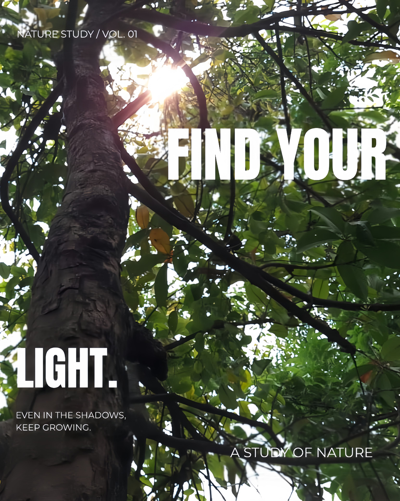
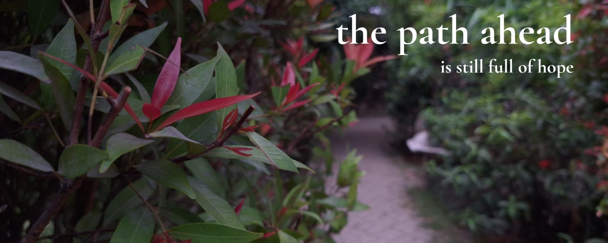
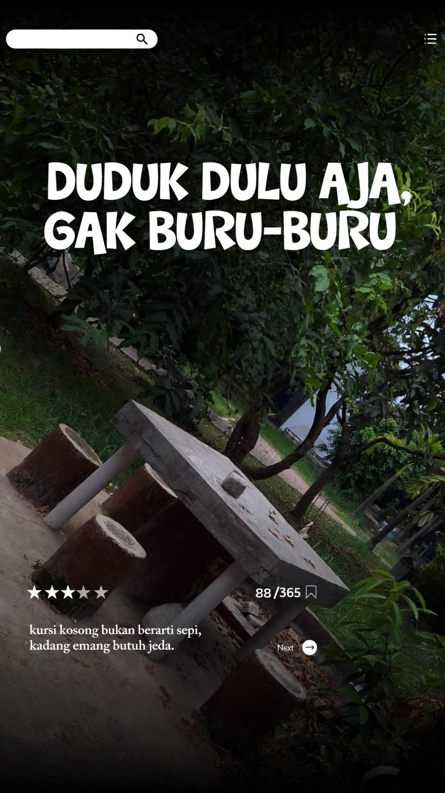

Rooted in Light
Potret sudut pandang rendah menatap batang pohon yang menjulang dan rimbun dedaunan yang ditembus hangatnya cahaya matahari, menggambarkan keteguhan untuk terus bertumbuh di setiap musim.

Seni & Teknologi
Satu Ruang Kolaborasi, Sejuta Aksi Tanpa Batasi Imajinasi. Tempat berkumpulnya karya dari bidang Fotografi, DKV, dan Programming.

Sorotan Karya
Potret sudut pandang rendah menatap batang pohon yang menjulang dan rimbun dedaunan yang ditembus hangatnya cahaya matahari, menggambarkan keteguhan untuk terus bertumbuh di setiap musim.

Rimbun daun pucuk merah yang mengiringi jalan setapak di taman sekolah, menghadirkan nuansa tenang sekaligus pengingat bahwa langkah ke depan selalu penuh harapan.

Sudut meja dan kursi beton di bawah rindangnya pepohonan taman sekolah. Tempat singgah yang mengingatkan bahwa kursi kosong bukan berarti sepi, melainkan ruang untuk berhenti sejenak dan mengambil napas.
Tentang Proyek Ini
Proyek ini adalah ruang pameran digital tempat tiga dimensi kreativitas bersatu. Mahakarya visual dari Fotografi dan DKV diberikan 'nyawa' serta interaktivitas oleh keahlian Programming.
Buka Halaman Galeri